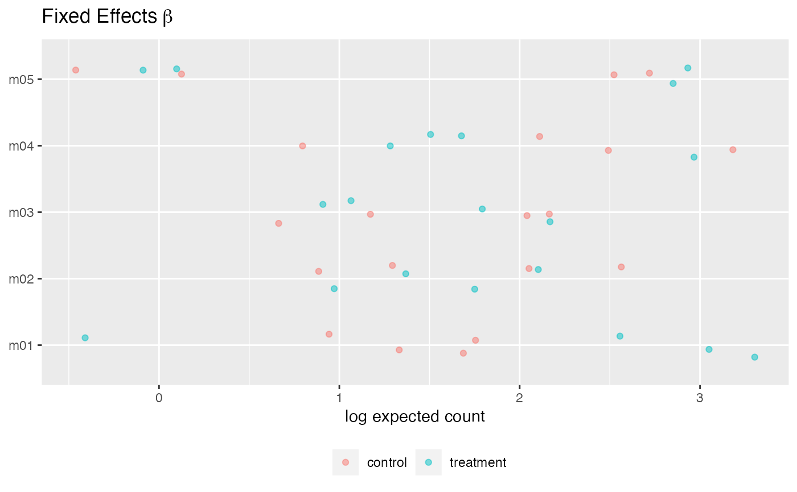

R/plot.cytoeffect_poisson_mcle.R
plot.cytoeffect_poisson_mcle.RdPlot point estimates for MCLE fit
# S3 method for cytoeffect_poisson_mcle
plot(x, type = "beta", selection = x$protein_names, ...)Object of class cytoeffect_poisson computed
using poisson_lognormal
A string with the parameter to plot:
type = "beta", type = "sigma", or type = "Cor"
A vector of strings with a selection of protein names to plot
Other parameters
ggplot2 object
set.seed(1)
df = simulate_data(n_cells = 10)
str(df)
#> tibble [80 × 7] (S3: tbl_df/tbl/data.frame)
#> $ donor : chr [1:80] "pid01" "pid01" "pid01" "pid01" ...
#> $ condition: Factor w/ 2 levels "control","treatment": 2 2 2 2 2 2 2 2 2 2 ...
#> $ m01 : num [1:80] 80 6 6 3 17 20 14 90 79 46 ...
#> $ m02 : num [1:80] 21 3 4 1 1 9 40 17 24 0 ...
#> $ m03 : num [1:80] 6 2 12 49 3 8 14 6 0 4 ...
#> $ m04 : num [1:80] 4 0 11 10 0 2 22 8 14 13 ...
#> $ m05 : num [1:80] 12 0 3 0 0 1 1 4 1 1 ...
fit = poisson_lognormal_mcle(df,
protein_names = names(df)[3:ncol(df)],
condition = "condition",
group = "donor",
ncores = 1)
#> No readable configuration file found
#> Created registry in '/Users/cseiler/Documents/GitHub/cytoeffect/docs/reference/registry_2022_12_12_104103' using cluster functions 'Interactive'
#> Adding 8 jobs ...
#> Submitting 8 jobs in 8 chunks using cluster functions 'Multicore' ...
#> This deletes all files in '/Users/cseiler/Documents/GitHub/cytoeffect/docs/reference/registry_2022_12_12_104103'. Proceeding in 5 seconds ...
#> Unsetting registry as default
#> Recursively removing files in '/Users/cseiler/Documents/GitHub/cytoeffect/docs/reference/registry_2022_12_12_104103' ...
plot(fit, type = "beta")
#> New names:
#> • `` -> `...1`
#> • `` -> `...2`
#> • `` -> `...3`
#> • `` -> `...4`
#> • `` -> `...5`
#> • `` -> `...6`
#> • `` -> `...7`
#> • `` -> `...8`
